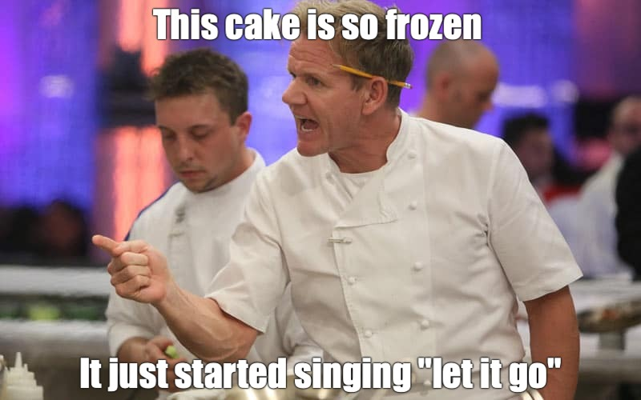

In what concerns the continuous evaluation solving exercises grade during the semester, you should submit until 23:59 of March 3rd
(this exercise will still be available for submission after that deadline, but without couting towards your grade)
[to understand the context of this problem, you should read the class #01 exercise sheet]
 Dad is a great cook... except with cakes. Let's help him take the cake out of the oven before it burns up!
Write a program that, given the start time when the cake is put in the oven and the duration it needs to bake, calculates the time when the cake should be taken out. Make sure to handle cases where the time extends into the next day.
The input should consist of six values, each on a single line.
The first three integers represent the start time in hours (SH), minutes (SM), and seconds (SS).
The next three integers represent the baking duration in hours (BH), minutes (BM), and seconds (BS).
The output should be a single line formatted as:
Take the cake out at HH:MM:SS.HH, MM, and SS represent the time when the cake should be taken out of the oven: hours, minutes, and seconds.
A 24-hour time format should be considered for the output (so never larger than 23:59:59).
The baking duration can cause the time to roll over into the next days, although you do not have to keep track of the current day (see examples 2 and 3).
The following limits are guaranteed in all the test cases that will be given to your program:
| 0 ≤ SH ≤ 23 | Hours of the start time | |
| 0 ≤ SM, SS ≤ 60 | Minuts and seconds of the start time | |
| 0 ≤ BH, BM, BS ≤ 100 000 | Hours minuts and seconds of the baking time |
| Example Input 1 | Example Output 1 |
13 30 12 1 20 30 |
Take the cake out at 14:50:42. |
| Example Input 2 | Example Output 2 |
18 30 0 9 20 15 |
Take the cake out at 03:50:15. |
| Example Input 3 | Example Output 3 |
17 0 0 36 75 124 |
Take the cake out at 06:17:04. |